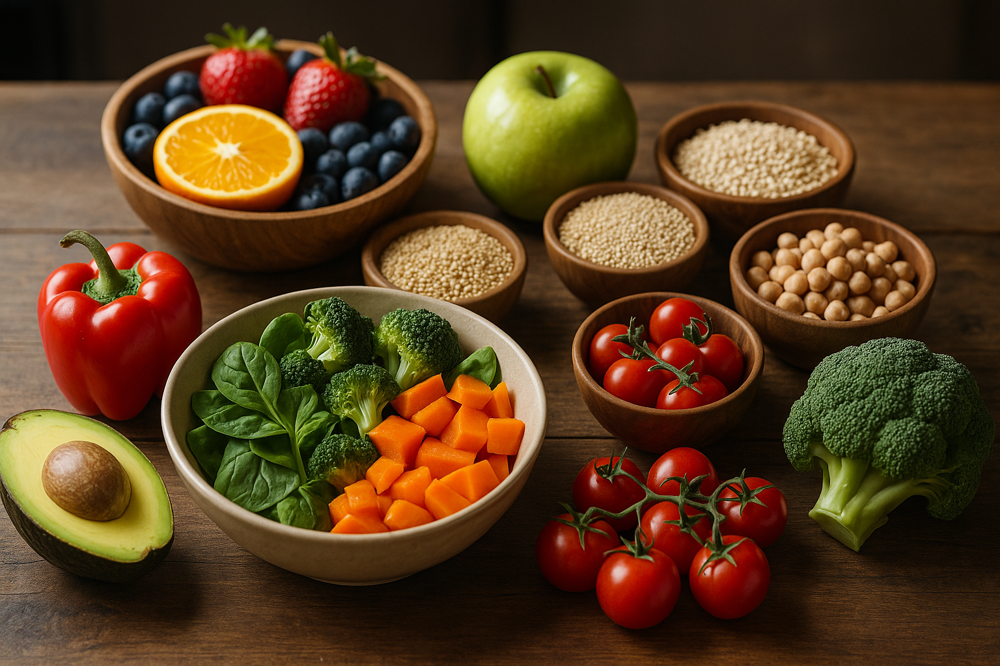

Bem-vindo à NutriLife
Nosso objetivo é facilitar sua jornada rumo a uma vida saudável, oferecendo ferramentas práticas como a calculadora de IMC, a calculadora de calorias, um banco de receitas nutritivas e um diário alimentar para acompanhar seu progresso.
